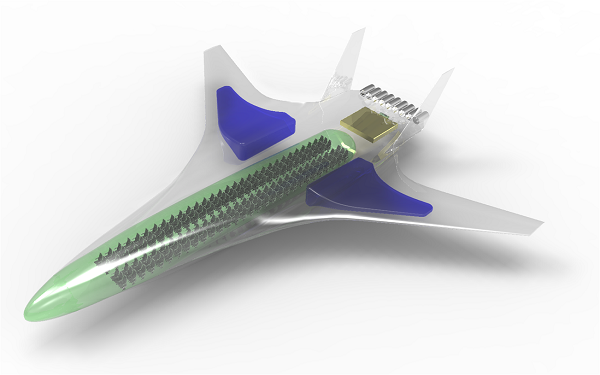

SUAVE is a conceptual level aircraft design environment built with the ability to analyze and optimize both conventional and unconventional designs. This capability is achieved in part by allowing analysis information for aircraft to be drawn from multiple sources. Many other software tools for aircraft conceptual design rely on fixed empirical correlations and other handbook approximation. SUAVE instead provides a framework that can be used to design aircraft featuring advanced technologies by augmenting relevant correlations with physics-based methods.

SUAVE is an open source suite constructed as a modular set of analysis tools written in Python. Additional capabilities can be incorporated using extensible interfaces and prototyped with a top-level script. The flexibility of the environment allows the creation of arbitrary mission profiles, unconventional propulsion networks, and right-fidelity at right-time discipline analyses. SUAVE is currently being developed in the Aerospace Design Lab at Stanford University.
Capabilities Available
SUAVE's current capabilities include the following:
- Aerodynamics for subsonic and supersonic flight
- Weight correlations for tube-and-wing aircraft, BWBs, human-powered aircraft, and small UAVs
- VTOL mission segments
- Static and dynamic stability
- Energy networks for gas turbine, battery, fuel cell, and solar panel-based vehicles
- Noise correlations for tube-and-wing aircraft and components
- Basic performance estimation methods
- Aerodynamic and stability analysis with AVL
- Geometry output through OpenVSP
- Euler CFD through SU2
- Single and multi-fidelity optimization with capability to add new optimizers
Publications
We've recently presented papers on the technical background of SUAVE as applied to the analysis and optimization of aerospace vehicles. The first paper describes the models available and the motivations for the programming structures used in the package. The second paper details the schematics of setting up optimization problems and sample results.
T. Lukaczyk, A. Wendorff, E. Botero, T. MacDonald, T. Momose, A. Variyar, J. M. Vegh, M. Colonno, T. Economon, J. J. Alonso, T. Orra, C. Ilario, "SUAVE: An Open-Source Environment for Multi-Fidelity Conceptual Vehicle Design", 16th AIAA Multidisciplinary Analysis and Optimization Conference, Dallas, TX, June 2015.
E. Botero, A. Wendorff, T. MacDonald, A. Variyar, J. M. Vegh, T. Lukaczyk, J. J. Alonso, T. Orra, C. Ilario da Silva. "SUAVE: An Open-Source Environment for Conceptual Vehicle Design and Optimization", 54th AIAA Aerospace Sciences Meeting, San Diego, CA, January 2016.
T. MacDonald, E. Botero, J. M. Vegh, A. Variyar, J. J. Alonso, T. Orra, C. Ilario da Silva. "SUAVE: An Open-Source Environment Enabling Unconventional Designs through Higher Fidelity", 55th AIAA Aerospace Sciences Meeting, Grapevine, TX, January 2017.
T. MacDonald, M. Clarke, E. Botero, J. M. Vegh, J. J. Alonso. "SUAVE: An Open-Source Environment Enabling Multi-fidelity Vehicle Optimization", 16th AIAA Multidisciplinary Analysis and Optimization Conference, Denver, CO, June 2017.
Partners